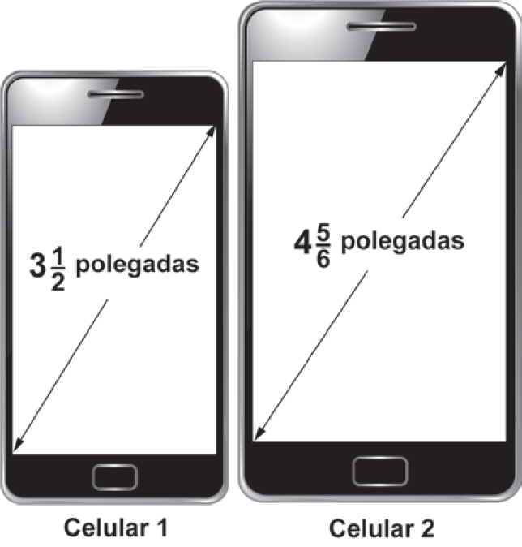
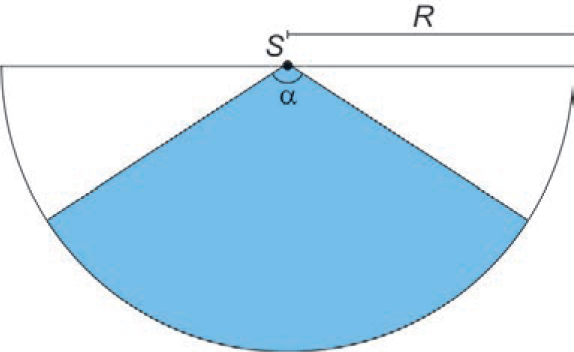
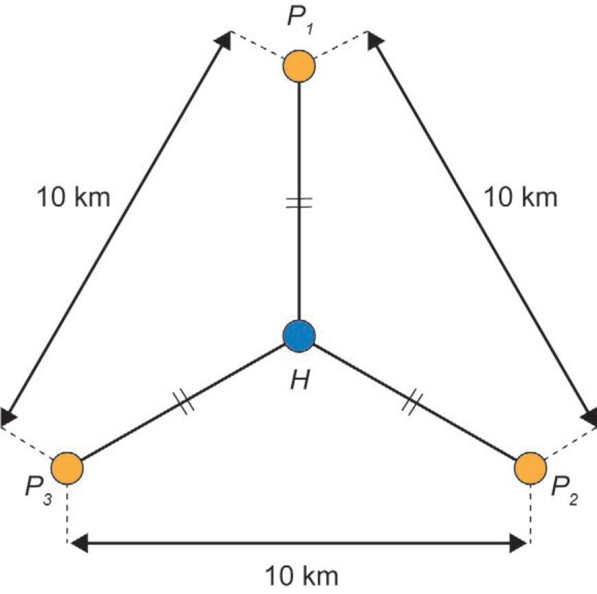
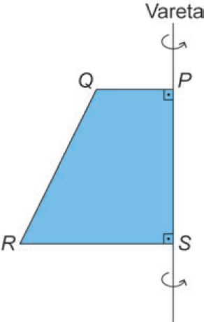
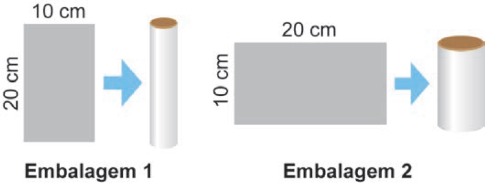

Último dia de estudo! Hoje é a Matemática do dia a dia e a Geometria, que juntas são o que mais cai. Tudo explicado passo a passo, sem pressa, com um simulado de 20 questões reais do ENEM. Vai com calma: você já sabe mais do que imagina.
Missão de sábado
Véspera: Matemática e Geometria
Hoje é o último dia de estudo. A ideia não é aprender tudo, é revisar com calma e chegar amanhã confiante. Siga a ordem e marque o que for terminando.
Antes de começar
Adriely, respira. Você já fez a parte mais difícil: o primeiro dia de prova. Matemática assusta, mas no ENEM ela é quase sempre conta do dia a dia: preço, receita, medida, piso, caixa-d'água. Você faz isso na vida sem perceber. Hoje a gente só vai dar nome às coisas.
Pesquisa
O que mais cai em Matemática
Análise de 416 questões de Matemática do ENEM, de 2009 a 2023, com o gabarito oficial. Amanhã são 45 questões de Matemática.
Assunto
Questões
Unidades de medida e conversões
64
Geometria plana (áreas, perímetros)
62
Gráficos e tabelas
61
Geometria espacial (volumes, sólidos)
57
Porcentagem e juros
52
Média, moda e mediana
34
Probabilidade
25
Funções
24
Razão, proporção e regra de três
21
Escala
10
Contagem pelas palavras do enunciado; uma questão pode ter mais de um assunto. Proporção aparece escondida em quase todas.
A conclusão
Somando plana e espacial, a Geometria é o assunto que mais cai, junto com medidas. E é uma Geometria prática: área de piso, volume de caixa, formato de embalagem. Trigonometria quase não aparece (1 questão em 15 anos!).
Antes de tudo
O método dos 4 passos
Use em toda questão de Matemática. Funciona mesmo quando bate o nervoso.
1º passo: leia a pergunta primeiro (a última frase). O que ela quer? Um preço? Uma área? Uma quantidade de caixas? 2º passo: separe os números do texto num cantinho do papel, com a unidade (m, cm, L, R$). 3º passo: faça a conta em pedaços pequenos, um de cada vez, escrevendo tudo. 4º passo: confira se a resposta faz sentido e se está na mesma unidade das alternativas.
Lembre
Você não precisa fazer a conta de cabeça. O papel de rascunho existe para isso. Escrever é pensar com calma.
Parte 1
Matemática do dia a dia
Revisão bem resumida. A explicação completa, do zero, está na página de Matemática que você já tem.
Porcentagem
Em uma frase
Por cento = dividido por 100. 25% = 25 ÷ 100 = 0,25. 135% = 1,35. É só andar com a vírgula duas casas para a esquerda.
Calcular 30% de 200: 0,30 × 200 = 60. Aumento de 10%: multiplique por 1,10. Desconto de 20%: multiplique por 0,80 (sobram 80%). Aumento e desconto seguidos: multiplique um depois do outro. 100 × 1,20 × 0,80 = 96 (não volta a 100!).
Pegadinha
"30% a menos que a quantidade de João" é 70% do número de João. Não é tirar 30 pontos da porcentagem dele.
Regra de três e proporção
Pergunte: "se um aumenta, o outro aumenta ou diminui?" Direta (os dois aumentam): 2 kg custam R$ 10, 6 kg custam? → 2x = 6 × 10 → x = 30. Inversa (um aumenta, o outro diminui): 3 pedreiros levam 8 dias; 6 pedreiros levam? → 3 × 8 = 6 × x → x = 4.
Dividir proporcionalmente: R$ 900 para 3 pessoas que trabalharam 2, 3 e 4 horas. 1º: some as partes: 2 + 3 + 4 = 9 horas. 2º: valor de 1 parte: 900 ÷ 9 = 100. 3º: cada um recebe: 200, 300 e 400.
Unidades e escala
1 m = 100 cm1 km = 1 000 m1 L = 1 000 mL1 m³ = 1 000 L1 dm³ = 1 L1 cm³ = 1 mL1 h = 60 min
Escala = desenho : real, nas mesmas unidades. Desenho de 9 cm para uma peça de 45 cm: 9 : 45. Divida os dois por 9: 1 : 5. Na escala 1 : k, o comprimento fica × k, a área × k² e o volume × k³.
Média, moda e mediana
Média
Soma tudo e divide pela quantidade. Notas 6, 7 e 8: (6 + 7 + 8) ÷ 3 = 7.
Moda
O valor que mais se repete. Em 13, 13, 13, 17, 27, 36, a moda é 13.
Mediana
Coloque em ordem e pegue o do meio. Se forem dois no meio, faça a média deles.
Função afim: parte fixa + parte que muda
Em uma frase
É a conta de táxi, de aplicativo, de conta de luz: um valor fixo + um valor por unidade. y = (valor por unidade) × x + (fixo).
Aplicativo: R$ 2,00 fixo + R$ 1,40 por km. Corrida de 10 km: 2 + 1,40 × 10 = R$ 16,00. Achar a função numa tabela: 30 mochilas custam 1 050 e 50 custam 1 650. 1º: diferença de preço ÷ diferença de quantidade = 600 ÷ 20 = 30 por mochila. 2º: parte fixa = 1 050 − 30 × 30 = 150. 3º: função: y = 30x + 150.
Probabilidade
P = o que eu quero ÷ o total. Tirar 6 num dado: 1 ÷ 6. "E" (uma coisa e depois outra): multiplica. Duas caras seguidas: ½ × ½ = ¼. "Pelo menos um": faça 1 − (chance de nenhum). É bem mais fácil!
Frações sem medo
Fração é uma divisão: ¾ = 3 ÷ 4 = 0,75. Número misto: 3½ = 3 + 0,5 = 3,5. 4⅚ = 4 + (5 ÷ 6) ≈ 4,83. Quando as alternativas estão em decimal, transforme tudo em decimal.
Guarde isto
% = ÷ 100. Aumento × (1 + i), desconto × (1 − i). Regra de três: aumenta-aumenta = direta. Média = soma ÷ quantidade. Mediana = ordena e pega o meio. Função = fixo + variável. "Pelo menos um" = 1 − nenhum.
Respira
Se algo aqui ainda parece confuso, tudo bem. Você não precisa acertar as 45. Cada questão que você acerta conta. Foque nas que você entende e vai com calma nas outras.
Parte 2 · o que mais cai
Geometria plana
Calma
Geometria parece difícil por causa dos desenhos. Mas quase toda questão é só isto: descobrir a forma → lembrar a fórmula → trocar os números. Você consegue.
Perímetro x área: a diferença mais importante
Perímetro = contorno
É a soma dos lados. É o tamanho da cerca, do rodapé, da moldura. Unidade: m, cm.
Área = o que está dentro
É o tamanho do piso, do terreno, da parede para pintar. Unidade: m², cm².
Sala de 3 m por 4 m: Rodapé (perímetro): 3 + 4 + 3 + 4 = 14 m. Piso (área): 3 × 4 = 12 m².
As fórmulas de área
Quadrado
A = l × l
lado vezes lado
Retângulo
A = b × h
base vezes altura
Triângulo
A = b × h ÷ 2
é meio retângulo
Trapézio
A = (B + b) × h ÷ 2
base maior + base menor
Círculo
A = π × r²
use π ≈ 3
Setor ("pizza")
A = (ângulo ÷ 360) × π r²
um pedaço do círculo
O círculo, passo a passo
Raio é metade do diâmetro. Diâmetro 6 m → raio 3 m. Área: π × r² = 3 × 3 × 3 = 27 m². Contorno (circunferência): 2 × π × r = 2 × 3 × 3 = 18 m. Anel (a parte entre dois círculos): área do grande − área do pequeno.
Pegadinha clássica
O enunciado dá o diâmetro e a fórmula usa o raio. Sempre divida por 2 antes!
Triângulos especiais
Pitágoras (triângulo retângulo)
O que tem um ângulo reto (90°, um "cantinho" de quadrado). O lado maior (hipotenusa) ao quadrado = soma dos outros dois ao quadrado: a² = b² + c². O mais famoso: 3, 4 e 5 (9 + 16 = 25). Também: 6, 8, 10.
Equilátero (3 lados iguais)
Todos os ângulos têm 60°. Altura = lado × √3 ÷ 2, com √3 ≈ 1,7. O centro fica a 2/3 da altura, contando do vértice.
Ângulos
Dentro de um triângulo, os ângulos somam 180°. Num quadrilátero, 360°. Uma volta inteira tem 360°.
Semelhança
Figuras com o mesmo formato e tamanhos diferentes têm lados proporcionais. Ex.: a sombra de um poste e a sombra de uma pessoa, no mesmo horário.
Passo a passo: Pitágoras
Uma escada de 5 m está encostada num muro, com o pé a 3 m da parede. Que altura ela alcança? 1º: a escada é o lado maior (hipotenusa): 5² = 3² + h². 2º: 25 = 9 + h². 3º: h² = 16, então h = 4 m.
Passo a passo: quantas peças cabem?
Piso de 5 m × 6 m, com peças de 0,25 m × 0,50 m. Peças vendidas em caixas de 30. 1º: área do piso: 5 × 6 = 30 m². 2º: área de 1 peça: 0,25 × 0,50 = 0,125 m². 3º: peças: 30 ÷ 0,125 = 240. 4º: caixas: 240 ÷ 30 = 8. Se der número quebrado (por exemplo, 5,3 caixas), arredonde para cima: não dá para comprar meia caixa!
Guarde isto
Perímetro = contorno (cerca). Área = dentro (piso). Retângulo b × h; triângulo b × h ÷ 2; círculo π r² (raio = diâmetro ÷ 2; π ≈ 3). Pitágoras: 3, 4, 5. Triângulo: ângulos somam 180°. Faltou peça? Arredonde para cima.
Você está indo bem
Já chegou até aqui? Então já revisou mais da metade do que mais cai na prova. Bebe uma água, levanta, estica as pernas e volta para a última parte.
Parte 3
Geometria espacial
Em uma frase
Geometria espacial é a das coisas que ocupam espaço: caixa, lata, piscina, bola. A pergunta quase sempre é "quanto cabe?", ou seja, o volume.
Os sólidos e seus volumes
Cubo e caixa
V = c × l × h
cubo: a × a × a = a³
Cilindro (lata)
V = π × r² × h
área da base × altura
Cone (casquinha)
V = π r² h ÷ 3
um terço do cilindro
Pirâmide
V = base × h ÷ 3
um terço do prisma
Esfera (bola)
V = 4 × π × r³ ÷ 3
quase nunca precisa da fórmula
O segredo que vale para quase todos
Prisma, caixa e cilindro: volume = área da base × altura. Pirâmide e cone ("pontudos"): o mesmo, dividido por 3.
Passo a passo: volume e litros
Caixa-d'água de 2 m × 1 m × 1,5 m. Quantos litros cabem? 1º: volume: 2 × 1 × 1,5 = 3 m³. 2º: cada 1 m³ = 1 000 L. 3º: 3 × 1 000 = 3 000 litros.
Lata com raio 3 cm e altura 15 cm (π ≈ 3): 1º: área da base: 3 × 3² = 3 × 9 = 27 cm². 2º: volume: 27 × 15 = 405 cm³, que é 405 mL.
O truque do "dobrou o tamanho"
Se todas as medidas são multiplicadas por 2: comprimento × 2 · área × 2 × 2 = × 4 · volume × 2 × 2 × 2 = × 8. Um docinho com o dobro do diâmetro usa 8 vezes mais massa. Num cilindro, dobrar só o raio deixa a base 4 vezes maior (porque o raio está ao quadrado).
Faces, planificação e sólidos de revolução
Faces
Cubo: 6 quadrados. Pirâmide de base quadrada: 1 quadrado + 4 triângulos. Se cortar a ponta da pirâmide (tronco), os triângulos viram trapézios e aparece mais um quadrado em cima.
Planificação
É "desmontar" o sólido e abrir no chão, como uma caixa de papelão. A lateral de um cilindro aberta vira um retângulo: um lado é a altura e o outro é a volta do círculo (2πr).
Girar uma figura (revolução)
Retângulo girando → cilindro. Triângulo retângulo → cone. Semicírculo → esfera. Trapézio retângulo → tronco de cone. Girar sempre dá coisa redonda, nunca pirâmide.
Passe pelas 45 questões fazendo primeiro as que você entende de cara. Marque as difíceis com um risquinho e volte depois. Nenhuma questão vale mais que a outra no seu tempo.
2. Não deixe nenhuma em branco
Errar não tira ponto. Se não souber, elimine as alternativas absurdas e marque uma das que sobraram. Chute sempre.
3. Teste as alternativas
Travou na conta? Pegue as respostas e coloque no problema para ver qual funciona. Muitas vezes é mais rápido.
4. Olhe as unidades
Metade das pegadinhas é cm × m, L × m³, minuto × hora. Confira antes de marcar.
5. Hoje à noite
Pare de estudar cedo. Separe documento com foto, caneta preta de corpo transparente, água e um lanche. Confira o horário no Cartão de Confirmação. Durma bem: o sono vale mais que uma hora a mais de estudo.
Se der um branco
Para, fecha os olhos, respira fundo três vezes. Pula a questão e segue. O branco passa, e a resposta volta quando você para de forçar.
Simulado do dia
Simulado com questões reais do ENEM
Vinte questões que caíram de verdade no ENEM, a maioria da prova de 2024: dez de Matemática do dia a dia e dez de Geometria, na ordem da página. O texto e o gabarito são oficiais, e eu conferi cada conta. As explicações mostram o passo a passo. Use papel e lápis.
Isto é treino, não prova
Se errar, ótimo: leia a explicação com calma. Cada erro de hoje é um acerto de amanhã.
Como fazer
Leia o texto, escolha uma alternativa e toque em Confirmar. Você vê na hora se acertou e por quê. Tente fazer em até 3 minutos por questão, como na prova.
Questão 1ENEM 2024 · Porcentagem
Um instituto de pesquisa constatou que, nos últimos dez anos, o crescimento populacional de uma cidade foi de 135,25%.
Qual é a representação decimal da taxa percentual desse crescimento populacional?
Porcentagem é "dividido por 100". Então 135,25% = 135,25 ÷ 100. Dividir por 100 é andar com a vírgula duas casas para a esquerda: 135,25 vira 1,3525.
Questão 2ENEM 2024 · Porcentagem
João e Felipe participaram, na escola, de uma maratona de matemática na qual, durante uma semana, resolveram 200 questões cada. Nessa maratona, a porcentagem P de acertos de cada participante é convertida em um conceito: • insatisfatório: se 0 ≤ P < 50; • regular: se 50 ≤ P < 60; • bom: se 60 ≤ P < 75; • muito bom: se 75 ≤ P < 90; • excelente: se 90 ≤ P ≤ 100. João acertou 75% das questões da maratona e Felipe acertou 30% a menos que a quantidade de questões que João acertou.
Os conceitos de João e Felipe foram, respectivamente,
João: 75% de 200 = 150 questões. Como 75 ≤ 75 < 90, é "muito bom". Felipe acertou 30% a menos que João, e não 30% a menos de porcentagem! 150 × 0,70 = 105 questões. 105 de 200 = 52,5%, que fica entre 50 e 60: "regular". A pegadinha era fazer 75 − 30 = 45%.
Questão 3ENEM 2024 · Equação do 1º grau
Uma doceira vende e entrega, em seu bairro, porções de 100 gramas de docinhos de aniversário. Atualmente, a taxa única de entrega é R$ 10,00, e o valor cobrado por uma porção é R$ 25,00. Por uma estratégia de vendas, a partir da próxima semana, a taxa única de entrega será R$ 15,00, e um novo valor será cobrado por uma porção, de maneira que o valor total a ser pago por um cliente na compra de 5 porções permaneça o mesmo.
A partir da próxima semana, qual será o novo valor cobrado, em real, por uma porção?
Hoje, 5 porções custam 10 + 5 × 25 = 135 reais. Na semana que vem tem que dar o mesmo: 15 + 5 × x = 135. Tira os 15: 5x = 120. Divide por 5: x = 24.
Questão 4ENEM 2024 · Função afim
Uma empresa produz mochilas escolares sob encomenda. Essa empresa tem um custo total de produção composto por um custo fixo, que não depende do número de mochilas, mais um custo variável, que é proporcional ao número de mochilas produzidas. O custo total cresce de forma linear, e a tabela apresenta esse custo para três quantidades de mochilas produzidas. 30 mochilas: R$ 1 050,00 50 mochilas: R$ 1 650,00 100 mochilas: R$ 3 150,00
O custo total, em real, para a produção de 80 mochilas será
De 30 para 50 mochilas (20 a mais), o custo subiu 1 650 − 1 050 = 600. Então cada mochila custa 600 ÷ 20 = 30 reais. Parte fixa: 1 050 − 30 × 30 = 150. Para 80 mochilas: 150 + 80 × 30 = 150 + 2 400 = 2 550.
Questão 5ENEM 2024 · Proporção e porcentagem
Uma piscina tem capacidade de 2 500 000 litros. Seu sistema de abastecimento foi regulado para ter uma vazão constante de 6 000 litros de água por minuto. O mesmo sistema foi instalado em uma segunda piscina, com capacidade de 2 750 000 litros, e regulado para ter uma vazão, também constante, capaz de enchê-la em um tempo 20% maior que o gasto para encher a primeira piscina.
A vazão do sistema de abastecimento da segunda piscina, em litro por minuto, é
Tempo da 1ª piscina: 2 500 000 ÷ 6 000 ≈ 416,7 minutos. 20% a mais: 416,7 × 1,2 = 500 minutos. Vazão da 2ª: 2 750 000 ÷ 500 = 5 500 litros por minuto. Vazão = litros ÷ tempo.
Questão 6ENEM 2024 · Média
Contratos de vários serviços disponíveis na internet apresentam uma quantidade excessiva de informações. Isso faz com que o tempo necessário para a leitura desses contratos possa ser longo. O quadro apresenta uma amostra do tempo considerado necessário para a leitura completa do contrato de alguns serviços digitais (tempo em minuto): A: 36 · B: 17 · C: 27 · D: 13 · E: 13 · F: 13
O tempo médio, em minuto, necessário para a leitura completa de um contrato de serviço dentre os listados no quadro é, com uma casa decimal, aproximadamente,
Média = soma ÷ quantidade. Soma: 36 + 17 + 27 + 13 + 13 + 13 = 119. São 6 serviços: 119 ÷ 6 ≈ 19,8. Cuidado: 13 é a moda (o que mais repete), não a média.
Questão 7ENEM 2024 · Escala
Um professor de desenho apresentou uma peça de 45 centímetros de comprimento e solicitou aos alunos reproduzir no papel o objeto, em que as medidas devem ser proporcionais às medidas reais, e o comprimento desse desenho tem que ser de 9 centímetros.
A escala utilizada para realizar esse desenho é
Escala = desenho : real = 9 : 45. Simplifique dividindo os dois por 9: 1 : 5. Ou seja, cada 1 cm no papel vale 5 cm de verdade.
Questão 8ENEM 2024 · Frações
Atualmente, há telefones celulares com telas de diversos tamanhos e em formatos retangulares. Alguns deles apresentam telas medindo 3½ polegadas, com determinadas especificações técnicas. Além disso, em muitos modelos, com a inclusão de novas funções no celular, suas telas ficaram maiores, sendo muito comum encontrarmos atualmente telas medindo 4⅚ polegadas, conforme a figura.

A diferença de tamanho, em valor absoluto, entre as medidas, em polegada, das telas do celular 2 e do celular 1, representada apenas com uma casa decimal, é
Transforme as frações em decimal. 3½ = 3 + 0,5 = 3,5. 4⅚ = 4 + 5 ÷ 6 ≈ 4 + 0,83 = 4,83. Diferença: 4,83 − 3,5 ≈ 1,33, ou seja, 1,3 com uma casa decimal.
Questão 9ENEM 2019 · Probabilidade
O dono de um restaurante situado às margens de uma rodovia percebeu que, ao colocar uma placa de propaganda de seu restaurante ao longo da rodovia, as vendas aumentaram. Pesquisou junto aos seus clientes e concluiu que a probabilidade de um motorista perceber uma placa de anúncio é 1/2. Com isso, após autorização do órgão competente, decidiu instalar novas placas com anúncios de seu restaurante ao longo dessa rodovia, de maneira que a probabilidade de um motorista perceber pelo menos uma das placas instaladas fosse superior a 99/100.
A quantidade mínima de novas placas de propaganda a serem instaladas é
"Pelo menos uma" = 1 − "nenhuma". Cada placa passa despercebida com chance 1/2. Com n placas, a chance de não ver nenhuma é (1/2)ⁿ. Precisamos que isso fique menor que 1/100. Teste: 1/2, 1/4, 1/8, 1/16, 1/32, 1/64 (ainda maior que 1/100) e 1/128 (menor!). São 7 placas no total. Como 1 já existia, faltam 6 novas. A pegadinha era esquecer a placa que já estava lá.
Questão 10ENEM 2024 · Área do retângulo
O estádio do Maracanã passou por algumas modificações estruturais para a realização da Copa do Mundo de 2014, como, por exemplo, as dimensões do campo retangular. Para se adaptar aos padrões da Fifa, as dimensões do campo foram reduzidas de 110 metros por 75 metros para 105 metros por 68 metros.
Em quantos metros quadrados a área do campo do Maracanã foi reduzida?
Área do retângulo = base × altura. Antes: 110 × 75 = 8 250 m². Depois: 105 × 68 = 7 140 m². Redução: 8 250 − 7 140 = 1 110 m². A pegadinha (24 ou 35) é subtrair só os lados.
Questão 11ENEM 2024 · Área e arredondamento
Na construção de uma varanda retangular, com 5 metros de largura e 6 metros de comprimento, decidiu-se usar dois tipos de pedras para revestir o piso. Uma das pedras é quadrada, com 1 metro de lado, e a outra é retangular, com 0,25 metro de largura e 0,50 metro de comprimento. Serão utilizadas 10 pedras quadradas para decorar parte do piso, e o restante da área será revestida com pedras retangulares. A pedra do tipo retangular é vendida somente em caixas de 30 unidades.
Quantas caixas da pedra retangular deverão ser compradas?
Varanda: 5 × 6 = 30 m². As 10 pedras quadradas (1 m² cada) ocupam 10 m². Sobram 20 m². Cada pedra retangular: 0,25 × 0,50 = 0,125 m². Pedras: 20 ÷ 0,125 = 160. Caixas: 160 ÷ 30 = 5,33. Como 5 caixas não bastam, compra 6. Sobrou resto? Arredonda para cima!
Questão 12ENEM 2019 · Área do círculo
Em um condomínio, uma área pavimentada, que tem a forma de um círculo com diâmetro medindo 6 m, é cercado por grama. A administração do condomínio deseja ampliar essa área, mantendo seu formato circular, e aumentando, em 8 m, o diâmetro dessa região, mantendo o revestimento da parte já existente. O condomínio dispõe, em estoque, de material suficiente para pavimentar mais 100 m² de área. O síndico do condomínio irá avaliar se esse material disponível será suficiente para pavimentar a região a ser ampliada. Utilize 3 como aproximação para π.
A conclusão correta a que o síndico deverá chegar, considerando a nova área a ser pavimentada, é a de que o material disponível em estoque:
Raio é metade do diâmetro. Círculo antigo: diâmetro 6, raio 3, área 3 × 3² = 27 m². O diâmetro aumenta 8: fica 14, raio 7, área 3 × 7² = 147 m². A parte nova é o "anel" entre os dois: 147 − 27 = 120 m². É mais que os 100 m² do estoque: não será suficiente.
Questão 13ENEM 2024 · Setor circular
Um proprietário pretende instalar um sensor de presença para a proteção de seu imóvel. O sensor deverá detectar movimentos de objetos e pessoas numa determinada região plana. A figura ilustra a vista superior da área de cobertura (setor circular em azul) de um sensor colocado no ponto S. Essa área depende da medida do ângulo α, em grau, e do raio R, em metro.

Ao aumentar o ângulo α ou o raio R aumenta-se a área de cobertura do sensor. Entretanto, quanto maior essa área, maior o preço do sensor. Para esse fim, há cinco tipos de sensores disponíveis no mercado, cada um com as seguintes características: • tipo 1: α = 15° e R = 20 m; • tipo 2: α = 30° e R = 22 m; • tipo 3: α = 40° e R = 12 m; • tipo 4: α = 60° e R = 16 m; • tipo 5: α = 90° e R = 10 m. Esse proprietário pretende adquirir um desses sensores que seja capaz de cobrir, no mínimo, uma área de medida 70 m², com o menor preço possível. Use 3 como valor aproximado para π.
O proprietário do imóvel deverá adquirir o sensor do tipo
O setor é um "pedaço de pizza": área = (ângulo ÷ 360) × π × R². Tipo 1: 15/360 × 3 × 400 = 50. Tipo 2: 30/360 × 3 × 484 = 121. Tipo 3: 40/360 × 3 × 144 = 48. Tipo 4: 60/360 × 3 × 256 = 128. Tipo 5: 90/360 × 3 × 100 = 75. Passam de 70: os tipos 2, 4 e 5. O mais barato é o de menor área: tipo 5 (75 m²).
Questão 14ENEM 2024 · Triângulo equilátero
A prefeitura de uma cidade planeja construir três postos de saúde. Esses postos devem ser construídos em locais equidistantes entre si e de forma que as distâncias desses três postos ao hospital dessa cidade sejam iguais. Foram conseguidos três locais para a construção dos postos de saúde que apresentam as características desejadas, e que distam 10 quilômetros entre si, conforme o esquema, no qual o ponto H representa o local onde está construído o hospital; os pontos P₁, P₂ e P₃, os postos de saúde; e esses quatro pontos estão em um mesmo plano.

A distância, em quilômetro, entre o hospital e cada um dos postos de saúde, é um valor entre
Os postos formam um triângulo equilátero de lado 10. A altura dele é lado × √3 ÷ 2 = 10 × 1,73 ÷ 2 ≈ 8,66 km. O centro (H) fica a 2/3 da altura, contando a partir do vértice: 8,66 × 2 ÷ 3 ≈ 5,77 km. Está entre 5 e 6.
Questão 15ENEM 2020 · Sólidos e faces
Uma das Sete Maravilhas do Mundo Moderno é o Templo de Kukulkán, localizado na cidade de Chichén Itzá, no México. Geometricamente, esse templo pode ser representado por um tronco reto de pirâmide de base quadrada.
As quantidades de cada tipo de figura plana que formam esse tronco de pirâmide são
Pirâmide de base quadrada com a ponta cortada (tronco). Embaixo: um quadrado grande. Em cima, onde cortou: um quadrado menor. Os lados eram triângulos, mas perderam a ponta e viraram trapézios, iguais dos dois lados (isósceles). Total: 2 quadrados e 4 trapézios isósceles.
Questão 16ENEM 2024 · Sólido de revolução
Para obter um sólido de revolução (rotação de 360° em torno de um eixo fixo), uma professora realizou as seguintes etapas: • recortou o trapézio retângulo PQRS de um material rígido; • afixou o lado PS do trapézio em uma vareta fixa retilínea (eixo de rotação); • girou o trapézio 360° em torno da vareta e obteve um sólido de revolução. Observe a figura que apresenta o trapézio afixado na vareta e o sentido de giro.

O sólido obtido foi um(a)
Imagine girando: o lado de cima (PQ) desenha um círculo pequeno e o lado de baixo (SR) desenha um círculo grande. Dois círculos de tamanhos diferentes ligados por uma "parede" inclinada: é um cone com a ponta cortada, o tronco de cone. Girar nunca forma pirâmide, porque girar faz tudo redondo.
Questão 17ENEM 2024 · Volume do cilindro e do cubo
Em uma empresa é comercializado um produto em embalagens em formato de cilindro circular reto, com raio medindo 3 centímetros, e altura medindo 15 centímetros. Essa empresa planeja comercializar o mesmo produto em embalagens em formato de cubo, com capacidade igual a 80% da capacidade da embalagem cilíndrica utilizada atualmente. Use 3 como valor aproximado para π.
A medida da aresta da nova embalagem, em centímetro, deve ser
Cilindro: V = π × r² × h = 3 × 9 × 15 = 405 cm³. 80% disso: 405 × 0,8 = 324 cm³. Cubo: V = a × a × a = a³. Então a³ = 324, e a = ∛324. Como 324 = 27 × 12 e ∛27 = 3, fica a = 3∛12.
Questão 18ENEM 2022 · Volume do cilindro
Uma loja comercializa cinco modelos de caixas-d’água (I, II, III, IV e V), todos em formato de cilindro reto de base circular. Os modelos II, III, IV e V têm as especificações de suas dimensões dadas em relação às dimensões do modelo I, cuja profundidade é P e área da base é Ab, como segue: • modelo II: o dobro da profundidade e a metade da área da base do modelo I; • modelo III: o dobro da profundidade e a metade do raio da base do modelo I; • modelo IV: a metade da profundidade e o dobro da área da base do modelo I; • modelo V: a metade da profundidade e o dobro do raio da base do modelo I. Uma pessoa pretende comprar nessa loja o modelo de caixa-d’água que ofereça a maior capacidade volumétrica.
O modelo escolhido deve ser o
Volume do cilindro = área da base × profundidade. Modelo I: base × P = V. II: (base ÷ 2) × 2P = V. III: o raio pela metade deixa a base 4 vezes menor: (base ÷ 4) × 2P = V ÷ 2. IV: 2 × base × (P ÷ 2) = V. V: o raio dobrado deixa a base 4 vezes maior: 4 × base × (P ÷ 2) = 2V. O maior é o modelo V. Lembre: mexer no raio pesa ao quadrado!
Questão 19ENEM 2022 · Volume da esfera
Uma cozinheira produz docinhos especiais por encomenda. Usando uma receita-base de massa, ela prepara uma porção, com a qual produz 50 docinhos maciços de formato esférico, com 2 cm de diâmetro. Um cliente encomenda 150 desses docinhos, mas pede que cada um tenha formato esférico com 4 cm de diâmetro. A cozinheira pretende preparar o número exato de porções da receita-base de massa necessário para produzir os docinhos dessa encomenda.
Quantas porções da receita-base de massa ela deve preparar para atender esse cliente?
O diâmetro dobrou (de 2 para 4 cm). Quando todas as medidas dobram, o volume fica 2 × 2 × 2 = 8 vezes maior. Então cada docinho grande vale 8 pequenos. 150 grandes = 150 × 8 = 1 200 pequenos. Cada porção faz 50 pequenos: 1 200 ÷ 50 = 24 porções.
Questão 20ENEM 2024 · Cilindro e planificação
Uma indústria faz uma parceria com uma distribuidora de sucos para lançar no mercado dois tipos de embalagens. Para a fabricação dessas embalagens, a indústria dispõe de folhas de alumínio retangulares, de dimensões 10 cm × 20 cm. Cada uma dessas folhas é utilizada para formar a superfície lateral da embalagem, em formato de cilindro circular reto, que posteriormente recebe fundo e tampa circulares. A figura ilustra, dependendo de qual das duas extensões será utilizada como altura, as duas opções para formar a possível embalagem.

Dentre essas duas embalagens, a de maior capacidade apresentará volume, em centímetro cúbico, igual a
Ao enrolar a folha, um lado vira a altura e o outro vira a volta do círculo (comprimento = 2πr). Embalagem 2: altura 10, volta 20, então 2πr = 20 e r = 10/π. Volume = π × r² × h = π × (100/π²) × 10 = 1 000/π. A embalagem 1 (altura 20, volta 10) dá r = 5/π e volume 500/π, que é menor. A mais "gordinha" guarda mais.
Responda as questões para ver quantas você acertou.
Formulário de bolso
Tudo em um quadro
O quê
Como
Porcentagem
÷ 100 · aumento × (1 + i) · desconto × (1 − i)
Regra de três
direta: cruzado · inversa: em linha
Média / mediana
soma ÷ quantidade / ordena e pega o meio
Função afim
y = ax + b (b = fixo, a = por unidade)
Probabilidade
quero ÷ total · e = × · pelo menos um = 1 − nenhum
Escala 1 : k
comprimento × k · área × k² · volume × k³
Retângulo / triângulo
b × h / b × h ÷ 2
Trapézio
(B + b) × h ÷ 2
Círculo
área π r² · contorno 2πr · r = d ÷ 2 · π ≈ 3
Setor
(ângulo ÷ 360) × π r²
Pitágoras
a² = b² + c² · 3, 4, 5
Equilátero
altura = l × √3 ÷ 2 · √3 ≈ 1,7
Caixa / cilindro
c × l × h / π r² h
Cone / pirâmide
base × h ÷ 3
Litros
1 m³ = 1 000 L · 1 dm³ = 1 L · 1 cm³ = 1 mL
Adriely, amanhã é o último passo.
Olha tudo o que você fez nesta semana: redação, Humanas, Linguagens, Espanhol, Matemática, Biologia. Ninguém estuda tanto em tão pouco tempo sem ter garra.
Amanhã você não precisa ser perfeita. Precisa só fazer uma questão de cada vez, com calma, do jeito que treinou aqui.
Você é capaz. Você está pronta. E não está sozinha.